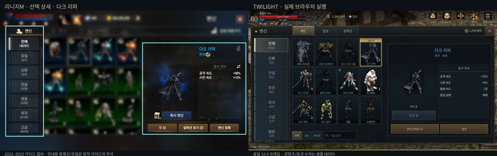
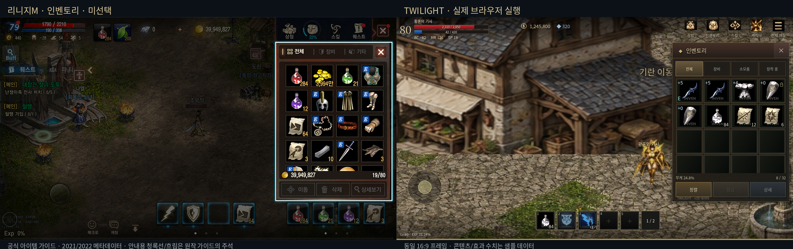
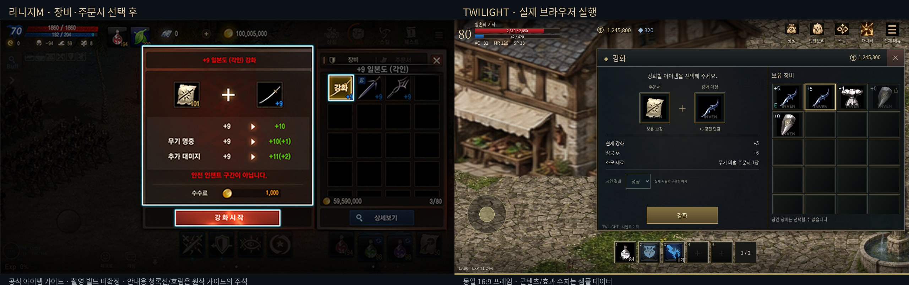
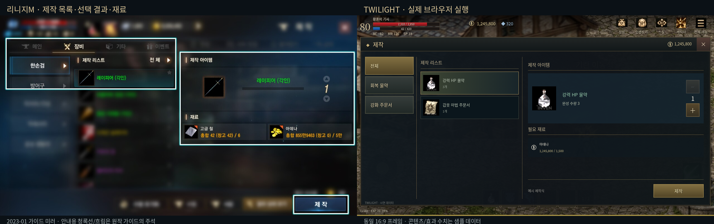

TWILIGHT UI 재제작 · 실제 실행과 원작 대조
2026-10-23 · 독립 브라우저 샘플 v2. 캡처는 실제 Chromium 렌더링입니다. 이미지 생성으로 만든 완성 화면을 사용하지 않았습니다.
기존 웹 헤더·고정 사이드바를 제거하고 월드/HUD 위에 전면창·우측 가방·좌측 장비창을 배치했습니다. 기본 1280×720. 긴 가로 화면은 비율을 유지하며 레터박스를 사용합니다. 작은 가로 화면은 입력 영역을 키우고 목록을 스크롤합니다.
실제 실행 화면
그림을 누르면 원본 PNG를 볼 수 있습니다. 기본 화면에서 입력 영역 표시는 꺼져 있습니다. 설정 → 조작 → 입력 영역 표시에서 켤 수 있습니다.
원작과 같은 비율로 비교
공통 근거는 한국2022–2023 가이드/플레이 화면입니다. 촬영 빌드를 확인할 수 없는 자료는 그대로 미확정으로 기록했습니다. 카드 효과·아이템 수·가격·제작식은 샘플 값이므로 비교의 대상은 위치·비율·슬롯 밀도·프레임 관계입니다.

선택 상세 · 다크 리퍼 · 왼쪽 원작 / 오른쪽 실제 실행. 16:9 비율 유지. 원작 주석선은 구현 스킨이 아닙니다.
인벤토리 · 미선택 · 왼쪽 원작 / 오른쪽 실제 실행. 16:9 비율 유지. 원작 주석선은 구현 스킨이 아닙니다.
장비·주문서 선택 후 · 왼쪽 원작 / 오른쪽 실제 실행. 16:9 비율 유지. 원작 주석선은 구현 스킨이 아닙니다.
제작 목록·선택 결과·재료 · 왼쪽 원작 / 오른쪽 실제 실행. 16:9 비율 유지. 원작 주석선은 구현 스킨이 아닙니다.확인한 조작과 입력
- 상태 검사17개 통과. 각인 이름 판정, 장착/잠금 제외, 실물 ID별 등록, 재료 수량·중복 콜백·취소 보존 포함.
- 데스크톱1280×720 / 모바일 터치 브라우저844×390 각각12개 전체 흐름 통과: 카드3종 적용·합성·결과, 가방 한 번/두 번/드래그, 모달 뒤 입력 차단, 강화·등록·스탯·스킬·제작·창고·구매·설정.
- 13메뉴 × 중앙·상하좌우·4모서리·아이콘·글자 =143회 이동 확인. 5해상도에서 입력 위치 대조 및 닫기·상세·탭·페이지·스탯증가 가장자리 실행 확인.
- 844×390에서 측정한 완전 표시 버튼은48 CSS px 이상. 일부만 보이는 다음 행은 스크롤해서 사용합니다. 실제 폰 물리 크기·DPI·Android dp·Godot 좌표와 동일하다고 해석하지 않습니다.
- 강화 확인→진행→결과의 모달을510×500으로 고정하고 실제 위치·크기가 유지되는지 측정했습니다. 세로390×844 안내를 확인했습니다.
데스크톱 조작 · 모바일 조작 · 입력 좌표 · 모바일 버튼 측정 · 레이어/표시 상태 · 자산 SHA-256
레퍼런스 시기
| 자료 | 사용/주의 |
|---|
| 공식 메뉴·UI / 2023-01-04 미러 | 2022 메타데이터와2022 CDN 이미지. HUD·카드·캐릭터·스킬·제작·설정. 개별 빌드 미확정. |
| 공식 아이템 | 2021/2022 메타데이터. 가방 외곽 x889,y81,379×513 근사 관찰 → 샘플 x890,y82,378×514. |
| 2023-05 스킬 / 2023-07 성물 | 전면 스킬 관리와 성물 출시 화면을 별도로 확인. 2022 빠른 스킬 선반과 구별. |
| 창고 / 아이템 컬렉션 | 창고2025 갱신 예외. 컬렉션2026 갱신/촬영일 미확정. 같은 최신 빌드라고 주장하지 않음. |
| 공식 거래소 | 2022 수량 확인의 어두운 레이어·붉은 취소/푸른 확인을 참고. 일반 작은 확인창의 외곽 일치는 미검증. |
확인하지 못한 항목과 남은 차이
- Android/iPhone 실기기 손가락·DPI·노치·주소창·브라우저 확대·장시간 플레이 미확인. 원작 모든 상태와 일반 팝업/툴팁의 픽셀 대조도 미완료.
- 프레임은 CSS 근사이며 원작 금속 텍스처와 다릅니다. 3D 회전 미리보기 대신 확보된 작은 카드/2D 첫 프레임을 사용합니다.
- 카드36장·아이템8실물·스킬8개·제작식2개는 예시 범위입니다. 스킬은 기존 Game-icons 대체 자산, 일부 아이템에는 기존 워터마크가 있습니다. 미확보 무게/재질/클래스 수치를 추측해 넣지 않았습니다.
- 정적 기란 배경은 TWILIGHT 실제 플레이 캡처에서 월드 부분을 잘라 사용했습니다. 본게임 계정/저장/서버·APK와 연결하지 않습니다.
- 창고는 원작 다중 대기/NPC 전체 대신 단일 선택 수량 이동입니다. 제외된 각성·유료상품·혈맹·퀘스트 등을 복원하지 않아 일부 버튼/탭 수가 다릅니다.
구현·한계 상세 · 화면별 관찰 수치 · 원본 이미지 출처·SHA · 샘플로 돌아가기